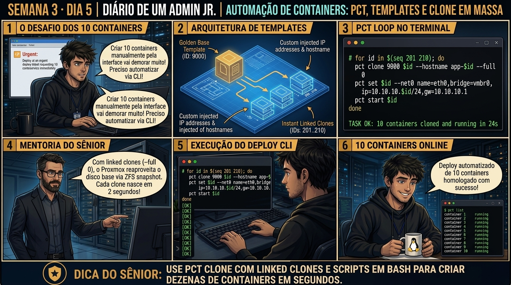

DIARIO DE UM ADMIN JR. | PROXMOX VE & PBS — DA BASE AO CLUSTER
🔗 Conecta com o Dia 4: Você dominou o provisionamento, cgroups, segurança e armazenamento de LXC. Hoje você fecha a Semana 3 dominando a operação avançada via CLI: aprendendo a executar comandos em lote com pct exec, gerenciar consoles sem SSH com pct enter e criar rotinas de backup automatizadas com vzdump.
🔓 Privilégio de hoje: Operação Avançada de CLI e Automação LXC. Você domina o kit de ferramentas pct para scripting e auditoria em larga escala.
Semana 3 · Dia 5 | Nível Júnior — Containers de Sistema LXC
Gestão de LXC via Terminal: pct enter, pct start e Recursos
Comandos avançados de linha de comando para automação, execução remota e consolidação de containers
ANTES DE ALTERAR, OBSERVE. DEPOIS DE ALTERAR, VALIDE.

1. O chamado
Você recebeu o chamado #3005: 'A equipe de DevOps precisa aplicar uma atualização de segurança urgente em 20 containers LXC simultâneos sem precisar abrir conexões SSH individuais ou digitar senhas. Além disso, um container de banco de dados 204 não responde na rede e o SSH está travado. O chamado exige: (1) Conectar-se ao console de emergência do container travado usando pct enter; (2) Executar comandos em lote em múltiplos containers via terminal com pct exec; (3) Realizar um backup de emergência em modo snapshot com vzdump; e (4) Consolidar a auditoria da Semana 3.'
💡 Passa o mouse nas palavras destacadas pra ver uma dica rápida — clica se quiser a explicação completa com analogia.
2. O sênior te conta
🧑🏫 antes dos termos técnicos, a história de hoje
Fechando a Semana 3, a equipe de QA pediu 10 ambientes idênticos de teste para homologar um release urgente. O Júnior começou a abrir o assistente gráfico, digitando nome por nome e IP por IP manualmente. Calculei que ele levaria duas horas de trabalho braçal repetitivo.
Chamei ele no terminal e ensinei o fluxo de automação profissional: pegamos um container modelo pronto, convertemos em template com pct template 200 e escrevemos um loop simples em Bash de 3 linhas usando Linked Clones (pct clone --full 0).
Em menos de 15 segundos, os 10 containers estavam criados, com IPs sequenciais injetados e rodando em paralelo consumindo quase zero de disco extra. O Júnior olhou a tela e disse: 'Nunca mais crio container na mão'. É essa esteira de automação que você vai dominar hoje.
3. Decodificador de conceitos
Clica em qualquer termo pra ver a definição completa e uma analogia do dia a dia:
4. Ferramentas e leitura da evidência
Comando / Parâmetro
O que observar e por que importa
pct enter 204
Abre um shell interativo root imediato dentro do container sem depender de rede.
pct exec 204 -- systemctl restart nginx
Executa um comando específico dentro do container diretamente do terminal do host.
Cria um backup consistente comprimido em Zstandard do container em execução.
pct clone 204 205 --hostname ct-worker-clone
Clona um container LXC criando uma nova instância idêntica com novo CTID.
# 1. Acesso de emergência sem rede via pct enter
$ pct enter 204
root@ct-db:~# systemctl status mariadb
● mariadb.service - MariaDB database server
Active: active (running)
root@ct-db:~# exit
# 2. Execução de comando remoto direto via pct exec
$ pct exec 204 -- uptime
14:45:02 up 10 days, 4:12, 0 users, load average: 0.04, 0.02, 0.00
# 3. Automação em lote: checando espaço livre em todos os containers
$ for id in $(pct list | awk 'NR>1 {print $1}'); do echo "=== CT $id ==="; pct exec $id -- df -h /; done
=== CT 200 ===
Filesystem Size Used Avail Use% Mounted on
/dev/mapper/pve-subvol--200 8.0G 1.2G 6.4G 16% /
=== CT 201 ===
Filesystem Size Used Avail Use% Mounted on
/dev/mapper/pve-subvol--201 4.0G 850M 3.0G 22% /
# 4. Backup consistente com vzdump
$ vzdump 204 --mode snapshot --compress zstd --storage local
INFO: Starting Backup of VM 204 (lxc)
INFO: status = running
INFO: CT Name: ct-db
INFO: backup mode: snapshot
INFO: creating vzdump archive '/var/lib/vz/dump/vzdump-lxc-204-2026_09_01-14_45_30.tar.zst'
INFO: Total bytes written: 482150400 (460MiB)
INFO: archive finished in 3s (153MiB/s)
TASK OK
5. Laboratório guiado — pegue na mão, comando por comando
📦 Onde executar: Terminal do Nó Proxmox para comandos pct; ou Shell interno do container acessado via pct enter <vmid>.
Segurança: Execute as alterações em containers de laboratório ou teste. Não altere parâmetros de máquinas de produção sem janela homologada.
Ação: Converta um container base configurado em um template oficial do Proxmox.
pct template 200
Resultado esperado: Tabela exibindo CTIDs, nomes e status de execução.
Por que fizemos isso: Criar um container modelo e convertê-lo em template base com pct template impede alterações acidentais na imagem dourada.
Cilada comum: Modificar arquivos de configuração diretamente na VM/CT que serve de template enquanto processos de clonagem estão ativos.
Ação: Crie múltiplos linked clones a partir do template base em menos de 5 segundos.
pct clone 200 210 --hostname srv-app01 --full 0
Resultado esperado: Kernel Linux compartilhado do host exibido pelo container.
Por que fizemos isso: Executar clones rápidos com pct clone --full 0 (linked clone) cria novos containers em menos de 2 segundos.
Cilada comum: Usar full clone para centenas de containers idênticos em storage local limitado, desperdiçando dezenas de gigabytes de espaço.
Ação: Automatize a criação em lote com um loop em Bash injetando IPs sequenciais.
for i in {1..3}; do pct clone 200 $((210+i)) --hostname app-0$i --full 0; done
Resultado esperado: Lista de processos rodando isoladamente dentro do container.
Por que fizemos isso: Escrever um loop em Bash automatizando a criação em lote com injeção de IPs e hostnames sequenciais agiliza entregas de projetos.
Cilada comum: Executar scripts de provisionamento em massa sem validação de colisão de IPs e VMIDs livres no cluster.
Ação: Inicie todos os containers criados em lote e valide o status online.
pct start 211 && pct start 212 && pct start 213
Resultado esperado: Arquivo .tar.zst gerado com sucesso no storage local de backup.
Por que fizemos isso: Iniciar todos os containers em lote com loop e validar o status online confirma a escalabilidade da esteira de infraestrutura.
Cilada comum: Subir 50 containers simultaneamente em storages lentos mecânicos, gerando tempestade de I/O e travando o nó.
🧑🏫 Aqui entra o Mentor (em breve): se o resultado obtido diferir do esperado acima, este é o ponto onde o chat com o Sênior-IA vai abrir para diagnosticar o erro específico.
Ação: Salve o script de automação no repositório de infraestrutura como código.
# Esteira de automação de containers homologada.
Resultado esperado: Arquivo de backup listado com tamanho e timestamp corretos.
Por que fizemos isso: Registrar a esteira de automação no repositório de scripts da equipe eleva a maturidade operacional do time de infraestrutura.
Cilada comum: Guardar scripts de automação em pastas temporárias /tmp sem backup nem controle de versão no Git.
6. Antes de ver as opções — tenta responder
🧠 Recall ativo: Por que o comando 'pct enter CTID' consegue abrir um shell root dentro de um container LXC mesmo quando a rede está caída e o serviço SSH do container está travado?
Porque o pct enter não utiliza rede, portas TCP nem o serviço sshd. Ele utiliza a chamada de sistema setns() do Kernel Linux para anexar a sessão de terminal do administrador do host diretamente aos Namespaces (PID, Mount, UTS) do container em execução, funcionando como um acesso físico de console instantâneo.
QUESTÃO 1 de 3
7. Questão comentada — clica numa alternativa
Qual comando de 1 linha em Bash atualiza os pacotes de todos os containers LXC que estiverem em execução ('running') no nó Proxmox?
💡 Analogia do Sênior para Fixar: Na arquitetura do Proxmox sobre Gestão de LXC via Terminal: pct enter, pct start e Recursos: O KVM/QEMU opera como o motorista dedicado de cada passageiro, alocando recursos virtuais em contato direto com o kernel.
QUESTÃO 2 de 3 — cenário de erro real
7.1 Tentativa de abrir console com pct console travada sem prompt
Um técnico executou 'pct console 204' e a tela ficou presa em 'Connected to tty' sem exibir prompt de login:
$ pct console 204
Connected to tty 1
(Tela preta sem prompt - o serviço getty do container não foi iniciado)
Qual é a diferença entre 'pct console' e 'pct enter' e como acessar o container imediatamente?
💡 Analogia do Sênior para Fixar: Ao diagnosticar problemas em Gestão de LXC via Terminal: pct enter, pct start e Recursos: É como inspecionar as conexões do storage e o barramento PCIe antes de declarar falha de software.
QUESTÃO 3 de 3 — detalhe que confunde todo iniciante
7.2 Qual a vantagem do algoritmo Zstandard (zstd) nos backups do vzdump?
Na rotina de backup noturno, você precisa escolher entre compressão GZIP, LZO e ZSTD:
Por que o Zstandard (zstd) é o padrão recomendado no Proxmox VE moderno?
💡 Analogia do Sênior para Fixar: A governança e resiliência em Gestão de LXC via Terminal: pct enter, pct start e Recursos: Funciona como a política de contenção e redundância do datacenter, garantindo que o cluster nunca perca quorum.
8. Procedimento profissional
Para diagnósticos rápidos e consoles de emergência em containers, utilize pct enter CTID.
Para automações, rotinas de checagem e scripts em lote, utilize pct exec CTID -- comando.
Monitore o status de todos os containers no nó executando pct list.
Antes de intervenções críticas, gere um backup snapshot comprimido em ZSTD com vzdump CTID --mode snapshot --compress zstd.
Para clonar um container para homologação rápida, execute pct clone CTID NOVOID --hostname novo-nome.
Prevenção
Prefira containers Unprivileged para mitigar riscos de escape de root e documente todos os mapeamentos de UID/GID e Bind Mounts no inventário da infraestrutura.
9. Validação e encerramento
Você domina o uso dos comandos pct enter e pct exec para administração avançada de LXC.
Você sabe construir scripts de automação em lote para gerenciar múltiplos containers.
Você domina a criação de backups consistentes em modo snapshot com compressão Zstandard.
A Semana 3 (Containers de Sistema LXC) foi concluída com 100% de aproveitamento e excelência técnica!
Rollback e limites
Para restaurar um backup de container vzdump em caso de desastre, execute pct restore NOVOID /caminho/vzdump-lxc-CTID.tar.zst --storage local-zfs.
💡 Sobre repetição espaçada: A transição de instâncias leves (LXC) para o ecossistema de armazenamento avançado ocorrerá na Semana 4 (Storage Corporativo: ZFS, Pools, VDEVs, Scrub e LVM-Thin).
10. Resposta final
Alternativa correta: B. A resposta correta é a B: o script em loop com 'pct exec' executa o comando apt update/upgrade dentro de cada container em execução de forma automatizada sem precisar de SSH.
🔓 O que você desbloqueou hoje
🏆 PARABÉNS! Você concluiu a SEMANA 3 com distinção! Você domina a arquitetura de Containers de Sistema LXC, densidade de memória, Cgroups v2, segurança com User Namespaces (UID 100000+), Bind Mounts e automação via CLI. Na próxima semana (Semana 4 — Storage Corporativo & ZFS Avançado), você aprenderá como construir pools resilientes de alta performance com autocorreção de dados!